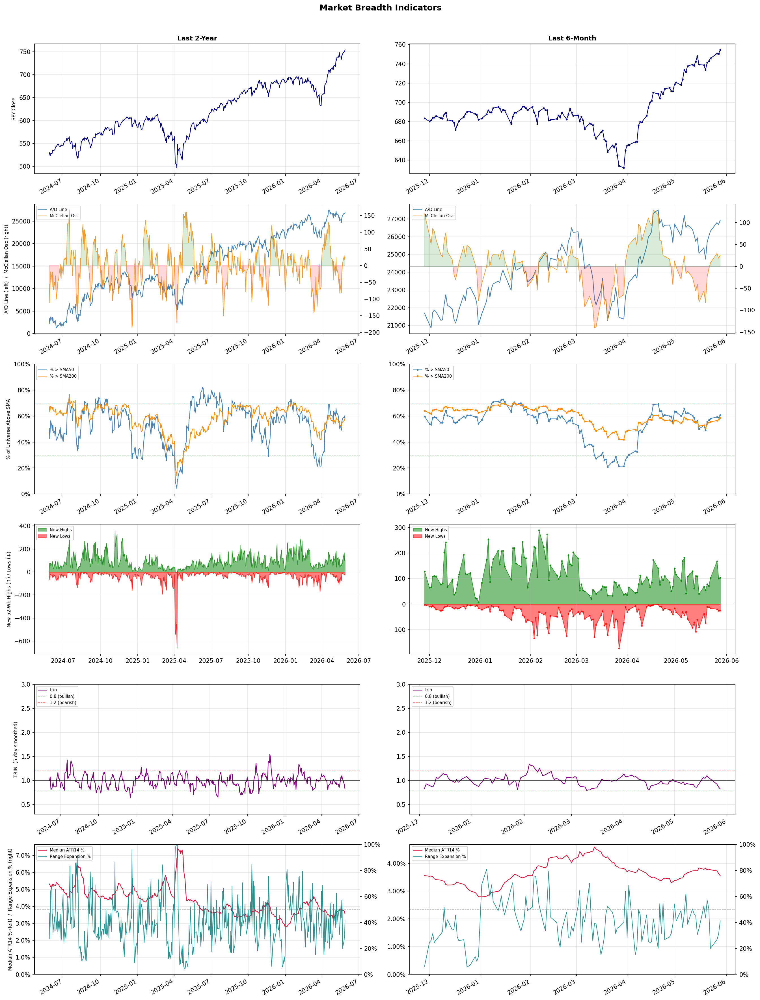

A daily research map of market breadth, industry rotation, and technical setups
| Item | Read |
|---|---|
| Regime | Risk-On |
| Risk posture | Selective |
| Indices | QQQ 735.60 (+0.8% today) |
| Universe | 1,706 stocks tracked · 104 new 52-week highs · 30 active swing setups |
| Breadth | 60.8% of tracked stocks are above SMA50, new highs exceed new lows (104 vs 25) |
| Leadership | Semiconductors, Computer Hardware, and Solar |
| Weakest groups | Packaged Foods, Waste Management, and Furnishings, Fixtures & Appliances |
Use this report to prioritize research and chart review; validate entries, stops, liquidity, earnings, and risk before acting.
| Item | Read |
|---|---|
| Primary read | Risk-On regime with Selective risk posture. |
| Research queue | NVTS, VSH, HIMX, MU, POET |
| Leadership focus | Semiconductors, Computer Hardware, and Solar |
| Caution list | Packaged Foods, Waste Management, and Furnishings, Fixtures & Appliances |
| Review prompt | Check extension risk, chart location, fundamentals, valuation, and earnings before using any research row. |
| Item | Read |
|---|---|
| Primary read | 1 active risk warnings; use screen output as watchlist input only. |
| Bullish screens | ALAB, ASX, SNDK, STX, WDC |
| Bearish screens | none |
| Alerts / levels | Automated trigger, stop, ATR, liquidity, reward/risk, and event-risk levels are pending future enrichment. |
| Review prompt | Open the linked chart, define trigger and invalidation, then check liquidity and event risk independently. |
Risk Posture: Selective — screen backdrop supports selective research in leading industries
Metric context: McClellan below -50 = elevated selling pressure; below -100 = washout territory. Range Expansion = share of stocks with daily range above their 20-day average. Signal Density = share of tracked names appearing in signal screens.
| Breadth Date | % > SMA50 | % > SMA200 | New Highs | New Lows | McClellan | Median Range | Avg Range | Median ATR14 | Range Expansion | Signal Density |
|---|---|---|---|---|---|---|---|---|---|---|
| 2026-05-28 | 60.8% | 58.6% | 104 | 25 | 25.4 | 2.9% | 3.7% | 3.6% | 41.2% | 5.5% |

Prior comparison date: May 27, 2026
| Metric | Prior | Current | Change |
|---|---|---|---|
| Regime | Selective Risk-On | Risk-On | changed |
| Risk Posture | Selective | Selective | unchanged |
| % > SMA50 | 58.9% | 60.8% | +1.9 pts |
| % > SMA200 | 57.3% | 58.6% | +1.3 pts |
| New Highs | 100 | 104 | +4 |
| New Lows | 26 | 25 | +1 |
Top-10 industries entering: Aerospace & Defense. Top-10 industries leaving: Healthcare Plans. New multi-signal long setups: ALAB, BTSG, BWA, CNI, CROX, DGX, EXEL, F, GH, ILMN. New multi-signal short setups: none.
| Status | Tickers | Read |
|---|---|---|
| Added | ALAB, BTSG, BWA, CNI, CROX, DGX, EXEL, F | New technical screen matches vs prior report. |
| Removed | APLE, BMO, BNS, DAL, DRH, ENPH, FLEX, HSBC | No longer present in today's technical screen matches. |
| Still Active | ACMR, ASTS, ASX, CORZ, GE, KNX, NUE, PK | Appeared in both current and prior reports. |
| Promoted | none | Model Screen Score improved by at least 15 points. |
| Downgraded | PK | Model Screen Score declined by at least 15 points. |
| Direction | Industry | Prior Rank | Current Rank | Days | Rank Change |
|---|---|---|---|---|---|
| Rose | Solar | 97 | 3 | 42 | +94 |
| Rose | Airlines | 96 | 15 | 28 | +81 |
| Rose | Diagnostics & Research | 96 | 18 | 35 | +78 |
| Rose | Aerospace & Defense | 81 | 10 | 35 | +71 |
| Rose | Copper | 89 | 20 | 28 | +69 |
| Direction | Industry | Prior Rank | Current Rank | Days | Rank Change |
|---|---|---|---|---|---|
| Fell | Utilities - Regulated Gas | 13 | 88 | 35 | -75 |
| Fell | Gambling | 21 | 85 | 28 | -64 |
| Fell | Residential Construction | 24 | 86 | 35 | -62 |
| Fell | Oil & Gas E&P | 25 | 84 | 28 | -59 |
| Fell | Insurance Brokers | 37 | 95 | 42 | -58 |
| Industry | Rank | ETF | 7d | 14d | 28d | 42d | Chg 42d | Size | 20D | 60D | Composite | Active Setups |
|---|---|---|---|---|---|---|---|---|---|---|---|---|
| Semiconductors | 1 | N/A | 1 | 1 | 1 | 3 | +2 | 36 | 40.6% | 107.0% | 0.995 | 3 |
| Computer Hardware | 2 | N/A | 2 | 3 | 5 | 8 | +6 | 14 | 38.9% | 70.4% | 0.975 | 2 |
| Solar | 3 | N/A | 10 | 17 | 83 | 97 | +94 | 8 | 54.9% | 54.1% | 0.971 | 1 |
| Communication Equipment | 4 | N/A | 3 | 4 | 4 | 2 | -2 | 17 | 25.6% | 48.4% | 0.962 | 2 |
| Electronic Components | 5 | N/A | 6 | 7 | 6 | 5 | 0 | 9 | 25.5% | 51.3% | 0.930 | 1 |
| Electrical Equipment & Parts | 6 | N/A | 9 | 10 | 7 | 12 | +6 | 11 | 23.2% | 47.3% | 0.926 | 0 |
| Semiconductor Equipment & Materials | 7 | N/A | 8 | 2 | 2 | 1 | -6 | 18 | 19.0% | 52.0% | 0.909 | 3 |
| Steel | 8 | N/A | 15 | 9 | 17 | 22 | +14 | 6 | 15.7% | 20.8% | 0.896 | 2 |
| REIT - Hotel & Motel | 9 | N/A | 4 | 14 | 11 | 19 | +10 | 7 | 11.2% | 17.7% | 0.880 | 2 |
| Aerospace & Defense | 10 | N/A | 23 | 27 | 80 | 45 | +35 | 27 | 30.8% | 23.8% | 0.866 | 3 |
Rank columns (7d–42d) show the industry's rank that many trading days ago — lower is stronger. Chg 42d = rank change vs 42 trading days ago — positive means the industry moved up. 20D and 60D are the mean stock return within the industry over that period. Active Setups: count of today's swing-trade candidates from this industry appearing across all signal screens.
| Industry | Rank | ETF | 7d | 14d | 28d | 42d | Chg 42d | Size | 20D | 60D | Composite | Active Setups |
|---|---|---|---|---|---|---|---|---|---|---|---|---|
| Packaged Foods | 98 | N/A | 97 | 96 | 91 | 96 | -2 | 17 | -7.1% | -18.2% | 0.099 | 1 |
| Waste Management | 97 | N/A | 83 | 78 | 81 | 91 | -6 | 5 | -4.3% | -8.5% | 0.151 | 2 |
| Furnishings, Fixtures & Appliances | 96 | N/A | 98 | 98 | 75 | 84 | -12 | 7 | -4.5% | -12.7% | 0.159 | 0 |
| Insurance Brokers | 95 | N/A | 64 | 83 | 92 | 37 | -58 | 6 | -1.9% | -3.6% | 0.168 | 0 |
| REIT - Mortgage | 94 | N/A | 82 | 76 | 61 | 75 | -19 | 15 | -4.3% | -4.6% | 0.185 | 1 |
| Real Estate Services | 93 | N/A | 87 | 82 | 77 | 94 | +1 | 10 | -5.6% | -8.9% | 0.199 | 1 |
| Industrial Distribution | 92 | N/A | 95 | 91 | 62 | 42 | -50 | 6 | -6.3% | -8.1% | 0.200 | 0 |
| Financial Data & Stock Exchanges | 91 | N/A | 67 | 69 | 76 | 79 | -12 | 7 | -1.8% | -5.6% | 0.207 | 1 |
| Utilities - Regulated Electric | 90 | N/A | 71 | 77 | 66 | 60 | -30 | 29 | -2.0% | -5.2% | 0.216 | 2 |
| Uranium | 89 | N/A | 96 | 81 | 42 | 44 | -45 | 6 | -3.4% | -9.0% | 0.216 | 0 |
Rank columns (7d–42d) show the industry's rank that many trading days ago — lower is stronger. Chg 42d = rank change vs 42 trading days ago — positive means the industry moved up. 20D and 60D are the mean stock return within the industry over that period. Active Setups: count of today's swing-trade candidates from this industry appearing across all signal screens.
These are research candidates from top-ranked stocks, capped at five names per industry to avoid over-concentration. Returns shown (60D, 120D, 250D) are historical — they reflect where prices have already moved, not forward expectations. Extension Risk flags names that may require extra patience or a better entry point. They are not buy signals.
Chart: TV = TradingView chart (opens in browser); PDF = local chart file (if downloaded).
| Ticker | Name | Industry | Industry Rank | Market Cap | 60D Hist | 120D Hist | 250D Hist | Extension Risk | Research Reason | Chart |
|---|---|---|---|---|---|---|---|---|---|---|
| NVTS | Navitas Semiconductor | Semiconductors | 1 | 1.9B | 220.3% | 228.1% | 428.9% | Very extended | Top-ranked in industry; very extended | TV · PDF |
| VSH | Vishay Intertechnology | Semiconductors | 1 | 2.3B | 191.0% | 249.4% | 265.6% | Very extended | Top-ranked in industry; very extended | TV · PDF |
| HIMX | Himax Technologies | Semiconductors | 1 | 1.3B | 184.8% | 157.7% | 149.6% | Very extended | Top-ranked in industry; very extended | TV · PDF |
| MU | Micron Technology | Semiconductors | 1 | 416.8B | 143.2% | 294.4% | 854.0% | Very extended | Top-ranked in industry; very extended | TV · PDF |
| POET | POET Technologies | Semiconductors | 1 | 959.0M | 88.4% | 120.6% | 200.7% | Extended | Top-ranked in industry; extended | TV · PDF |
| SNDK | SanDisk | Computer Hardware | 2 | 77.8B | 190.3% | 744.6% | 4153.0% | Very extended | Top-ranked in industry; very extended | TV · PDF |
| IONQ | IonQ Inc | Computer Hardware | 2 | 13.1B | 89.3% | 44.2% | 62.4% | Extended | Top-ranked in industry; extended | TV · PDF |
| QBTS | D-Wave Quantum | Computer Hardware | 2 | 6.8B | 61.7% | 17.6% | 81.3% | Extended | Top-ranked in industry; extended | TV · PDF |
| RGTI | Rigetti Computing | Computer Hardware | 2 | 5.6B | 59.4% | 3.8% | 105.6% | Extended | Top-ranked in industry; extended | TV · PDF |
| SMCI | Super Micro Computer | Computer Hardware | 2 | 18.8B | 34.6% | 22.6% | 0.4% | Constructive | Top-ranked in industry | TV · PDF |
| SHLS | Shoals Technologies | Solar | 3 | 956.1M | 106.4% | 60.3% | 183.1% | Very extended | Top-ranked in industry; very extended | TV · PDF |
| SEDG | SolarEdge Technologies | Solar | 3 | 2.0B | 93.6% | 131.5% | 340.9% | Extended | Top-ranked in industry; extended | TV · PDF |
| ENPH | Enphase Energy | Solar | 3 | 5.3B | 60.9% | 136.5% | 77.1% | Extended | Top-ranked in industry; extended | TV · PDF |
| FSLR | First Solar | Solar | 3 | 20.3B | 53.6% | 18.5% | 94.5% | Extended | Top-ranked in industry; extended | TV · PDF |
| CSIQ | Canadian Solar | Solar | 3 | 1.1B | 21.6% | -13.5% | 95.9% | Constructive | Top-ranked in industry | TV · PDF |
| VSAT | Viasat | Communication Equipment | 4 | 5.9B | 89.2% | 152.8% | 835.2% | Extended | Top-ranked in industry; extended | TV · PDF |
| HPE | Hewlett Packard Enterprise | Communication Equipment | 4 | 28.1B | 76.6% | 71.7% | 116.5% | Extended | Top-ranked in industry; extended | TV · PDF |
| HLIT | Harmonic | Communication Equipment | 4 | 1.0B | 66.5% | 74.2% | 85.0% | Extended | Top-ranked in industry; extended | TV · PDF |
| ASTS | AST SpaceMobile | Communication Equipment | 4 | 34.2B | 43.6% | 116.6% | 464.7% | Extended | Top-ranked in industry; extended | TV · PDF |
| ONDS | Ondas | Communication Equipment | 4 | 4.4B | 32.2% | 48.5% | 1138.3% | Constructive | Top-ranked in industry | TV · PDF |
These are technical screen matches from existing signal files. They are not trade recommendations. Trigger, stop, ATR, liquidity, reward/risk, and event risk still require separate validation until those inputs are available.
Model Screen Score is weighted by signal count, industry rank, freshness, and setup type. It is not a probability of profit, expected return, or suitability rating. Industry cap: max 3 candidates per industry.
Signal glossary: Momentum Pullback = stock in an uptrend that has pulled back 10–30% and shows re-entry conditions. MA Compression = short- and long-term moving averages converging, often preceding a directional move. Three-Day Up/Down = three consecutive closes in the same direction. New 52Wk High/Low = price reached a new annual extreme.
Chart: TV = TradingView chart (opens in browser); PDF = local chart file (if downloaded).
| Ticker | Industry | Setups | Close | Industry Rank | Signal Count | Model Screen Score | Reason | Chart |
|---|---|---|---|---|---|---|---|---|
| ALAB | Semiconductors | New 52Wk High; Three-Day Up | 349.17 | 1 | 2 | 100 | Multi-signal; top industry breakout | TV · PDF |
| ASX | Semiconductors | New 52Wk High; Three-Day Up | 40.60 | 1 | 2 | 100 | Multi-signal; top industry breakout | TV · PDF |
| SNDK | Computer Hardware | New 52Wk High; Three-Day Up | 1641.64 | 2 | 2 | 100 | Multi-signal; top industry breakout | TV · PDF |
| STX | Computer Hardware | New 52Wk High; Three-Day Up | 880.72 | 2 | 2 | 100 | Multi-signal; top industry breakout | TV · PDF |
| WDC | Computer Hardware | New 52Wk High; Three-Day Up | 531.18 | 2 | 2 | 100 | Multi-signal; top industry breakout | TV · PDF |
| ASTS | Communication Equipment | New 52Wk High; Three-Day Up | 133.09 | 4 | 2 | 93 | Multi-signal; top industry breakout | TV · PDF |
| VSAT | Communication Equipment | New 52Wk High; Three-Day Up | 86.69 | 4 | 2 | 93 | Multi-signal; top industry breakout | TV · PDF |
| ACMR | Semiconductor Equipment & Materials | New 52Wk High; Three-Day Up | 92.86 | 7 | 2 | 93 | Multi-signal; top industry breakout | TV · PDF |
| PK | REIT - Hotel & Motel | MA Compression; New 52Wk High | 12.17 | 9 | 2 | 90 | Multi-signal; top industry breakout | TV · PDF |
| JBLU | Airlines | MA Compression; Momentum Pullback | 5.38 | 15 | 2 | 90 | Multi-signal; pullback setup | TV · PDF |
| NUE | Steel | New 52Wk High; Three-Day Up | 249.30 | 8 | 2 | 85 | Multi-signal; top industry breakout | TV · PDF |
| STLD | Steel | New 52Wk High; Three-Day Up | 260.75 | 8 | 2 | 85 | Multi-signal; top industry breakout | TV · PDF |
| RDW | Aerospace & Defense | New 52Wk High; Three-Day Up | 25.90 | 10 | 2 | 85 | Multi-signal; top industry breakout | TV · PDF |
| KNX | Trucking | New 52Wk High; Three-Day Up | 75.02 | 11 | 2 | 85 | Multi-signal; new-high strength | TV · PDF |
| VSTS | Rental & Leasing Services | New 52Wk High; Three-Day Up | 12.80 | 13 | 2 | 85 | Multi-signal; new-high strength | TV · PDF |
| CORZ | Software - Infrastructure | New 52Wk High; Three-Day Up | 27.76 | 14 | 2 | 85 | Multi-signal; new-high strength | TV · PDF |
| GE | Aerospace & Defense | MA Compression; Three-Day Up | 320.82 | 10 | 2 | 80 | Multi-signal; top industry setup | TV · PDF |
| GH | Diagnostics & Research | New 52Wk High; Three-Day Up | 133.22 | 18 | 2 | 77 | Multi-signal; new-high strength | TV · PDF |
| ILMN | Diagnostics & Research | New 52Wk High; Three-Day Up | 158.70 | 18 | 2 | 77 | Multi-signal; new-high strength | TV · PDF |
| RIOT | Capital Markets | New 52Wk High; Three-Day Up | 27.74 | 19 | 2 | 77 | Multi-signal; new-high strength | TV · PDF |
| CROX | Footwear & Accessories | New 52Wk High; Three-Day Up | 118.62 | 21 | 2 | 77 | Multi-signal; new-high strength | TV · PDF |
| EXEL | Biotechnology | New 52Wk High; Three-Day Up | 51.45 | 23 | 2 | 77 | Multi-signal; new-high strength | TV · PDF |
| SLS | Biotechnology | New 52Wk High; Three-Day Up | 9.18 | 23 | 2 | 77 | Multi-signal; new-high strength | TV · PDF |
| VAC | Resorts & Casinos | New 52Wk High; Three-Day Up | 85.33 | 25 | 2 | 77 | Multi-signal; new-high strength | TV · PDF |
| DGX | Diagnostics & Research | MA Compression; Three-Day Up | 196.20 | 18 | 2 | 72 | Multi-signal; compression setup | TV · PDF |
| BWA | Auto Parts | New 52Wk High; Three-Day Up | 71.31 | 27 | 2 | 70 | Multi-signal; new-high strength | TV · PDF |
| BTSG | Health Information Services | New 52Wk High; Three-Day Up | 60.83 | 29 | 2 | 70 | Multi-signal; new-high strength | TV · PDF |
| TXG | Health Information Services | New 52Wk High; Three-Day Up | 27.99 | 29 | 2 | 70 | Multi-signal; new-high strength | TV · PDF |
| CNI | Railroads | New 52Wk High; Three-Day Up | 118.80 | 33 | 2 | 70 | Multi-signal; new-high strength | TV · PDF |
| F | Auto Manufacturers | New 52Wk High; Three-Day Up | 16.65 | 40 | 2 | 70 | Multi-signal; new-high strength | TV · PDF |
How To Use This Report
| Use | Purpose |
|---|---|
| Market map | Start with breadth, regime, risk warnings, and what changed since the prior report. |
| Industry scan | Use leading, deteriorating, rising, and declining industries to focus research. |
| Research queue | Treat long-term candidates as names for deeper fundamental, valuation, and chart review. |
| Technical review | Treat bullish and bearish screen matches as watchlist inputs that require independent trigger, stop, liquidity, and event-risk checks. |
| Source follow-up | Use chart links and source files to verify raw inputs before relying on any row. |
What This Report Is Not
| Not | Meaning |
|---|---|
| Investment advice | The report does not evaluate personal objectives, risk tolerance, tax situation, account type, or suitability. |
| Buy/sell recommendation | Named tickers are research candidates or screen matches, not recommendations to transact. |
| Price target | The report does not provide fair value estimates, targets, or expected returns. |
| Trade plan | Trigger, stop, sizing, reward/risk, liquidity, and event-risk review remain separate user work. |
| Performance claim | Model Screen Score is not validated historical performance or a forecast of future results. |
| Item | Note |
|---|---|
| Version | Daily Report Methodology v1 |
| Model Screen Score | Screen-fit rank based on signal count, industry rank, freshness, and setup type. |
| Not predictive proof | The score is not expected return, probability of profit, historical validation, or suitability analysis. |
| Industry ranks | Composite industry ranks use existing daily ranking outputs and historical rank columns when available. |
| Research candidates | Long-term rows are research candidates from ranked stocks and leading industries, with historical returns labeled as historical only. |
| Technical matches | Bullish and bearish rows are screen matches requiring independent chart, trigger, stop, liquidity, and event-risk review. |
| Source | Status | Rows | Path |
|---|---|---|---|
| Market breadth | present | 1254 | breadth_20260528.csv |
| Industry composite rankings | present | 98 | all_industry_composite_20260528.csv |
| Top ranked stocks | present | 153 | top_ranked_composite_20260528.csv |
| All ranked stocks | present | 1706 | all_stocks_composite_sorted_20260528.csv |
| Top momentum pullbacks | present | 1802 | top_momentum_pullbacks_20260528.csv |
| MA compression | present | 1802 | ma_compression_stocks_20260528.csv |
| Three-day up/down | present | 215 | three_day_up_down_stocks_20260528.csv |
| New 52-week members | present | 129 | breadth_new_52wk_members_20260528.csv |
This report is generated from automated technical screens and is for informational and research purposes only. It is not investment advice, a solicitation, or a recommendation to buy or sell any security. Past performance is not indicative of future results. You are solely responsible for your own investment decisions. Consult a licensed financial advisor before acting on any information herein.